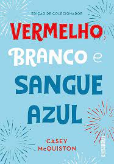
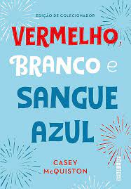
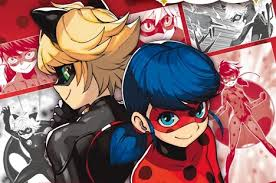

VEMELHOR BRANCO E SANGUE AZUL
GOSTO: 8/10

É UM LIVRO SOBRE O FILHO DA PRESIDENTA DOS EUA E O PRINCIPE DA INGLATERRA SE APAIXONAM E COMEÇA A FAZ TRAVESURAS GOSTOSAS EM TODO CANTO AS ESCODIDAS.
para conhecer mais clique aqui

É UM LIVRO SOBRE O FILHO DA PRESIDENTA DOS EUA E O PRINCIPE DA INGLATERRA SE APAIXONAM E COMEÇA A FAZ TRAVESURAS GOSTOSAS EM TODO CANTO AS ESCODIDAS.
para conhecer mais clique aqui
Uma menina orfan que apos o fim da guerra estuda para se torna uma autonoma de auto memorias ,em busta de entende o que significa "eu te amor"
para conheçe mais clique aqui

E UM BELA OBRA ONDE DOIS SUPER LERDOS QUE SÃO APAIXONADOS PELOS SEU AUTEREGOS MAIS SEM SABER QUE UM E O OUTRO,ALEM DE TEREM QUE LUTA CONTRA UM VILÃO QUE E CAPAZ DE CONTROLA AS PESSOAS ALEM DE DAR OS TRANSFORMALOS EM VILÕES.
PARA CONHEÇE MAIS clique aqui
uma vesão mais sombri do conto de fadas João e Maria.
para conheçe mais clique aqui